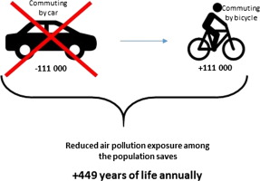

People should be responsible with their own trash, especially plastic waste. Plastic waste can really destroy the environment.Plastics are often washed into the ocean and other bodies of water, degrading the water's quality. Along with water bottles, plastic is utilized in a variety of other goods that people use on a daily basis, including everything from clothing to household items. It is advised that you avoid using plastics wherever possible to help limit the quantity of plastic garbage that is cycled into the environment. Look for alternatives to plastic bottles, cutlery, and straws. Make careful to recycle any plastic that you use.
REUSE, REDUCE AND RECYCLE
Reuse and Recycle can help us to save money and also to protect the environment. These is very important to us since the material things now is pricey than before. It is good for us to learn how to reuse and recycle.The concept of recycle and reuse is not just conserve resources and use them judicially but also is helpful for air pollution as it helps in reducing pollution emissions. The recycled products also take less power to make other products.
NO TO PLASTIC BAGS
Plastic items may be hazardous to the environment since they take a long time to degrade owing to their oil-based composition. Paper bags, on the other hand, are a superior solution because they degrade quickly and are recyclable. Plastics may harm animals as well when they eat it. It is good that we should just use eco bags instead of plastic bags when we are going to market.
WALK, BIKE OR USE PUBLIC TRANSPORTATION TO REDUCE AIR POLLUTION

Take public transit to work if you have the choice. Many towns have already invested in a solid public transportation network, and by using it (even only one or two days a week), you can help to reduce the number of automobiles on the road. Many governments also provide excellent incentives to encourage people to take public transit. Some widely used benefits are low-cost long-term prices, faster travel times to your destination, reduced waiting times, timeliness, and free fares during particular hours, on weekends, or for seniors and students.
EAT LOCAL AND ORGANIC PRODUCE & EAT LESS MEAT
Agriculture is the primary source of ammonia and other nitrogen-containing chemicals such as nitrous oxide and nitric oxide in nations with extensively cultivated fields. Livestock husbandry also produces large amounts of methane, a strong greenhouse gas, as well as non-methane volatile organic chemicals.Persistent Organic Pollutants such as hexachlorobenzene, hexachlorocyclohexane, and pentachlorophenol are released into the atmosphere by agricultural pesticides and fertilizers. Those names don't seem that appealing, do they? Consider that the air you breathe may also include these substances with complicated names. That is not at all natural.A research conducted by Columbia University's Earth Institute cautions about the health-damaging consequences of gases generated by traditional agriculture in conjunction with industrial pollutants.